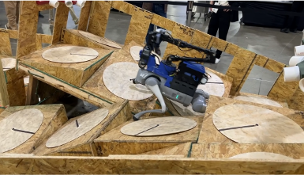

Adaptive Value Anchoring for Long-Horizon Stitching in Offline Reinforcement Learning
Under review
ROBOT LEARNING & ROBOTICS
Ph.D. Student in Electrical Engineering
KAISTDaejeon, South Korea
shlim@kaist.ac.krI am a Ph.D. student in Electrical Engineering at the Korea Advanced Institute of Science and Technology (KAIST), advised by Prof. Hyun Myung and Prof. Kimin Lee.
My research focuses on building efficient and robust legged manipulation systems, including humanoids and quadruped manipulators. To this end, I develop whole-body controllers, reinforcement learning-based manipulation systems, and offline reinforcement learning algorithms.
My recent work explores cross-embodiment learning to enable more efficient data collection for legged manipulators.
* Equal contribution.
Under review
Conference on Robot Learning (CoRL), 2026
IEEE International Conference on Robotics and Automation (ICRA), 2026 Oral Presentation (216 / 2,779 = 7.8%)
International Conference on Control, Automation and Systems (ICCAS), 2025
ACM/SIGAPP Symposium on Applied Computing (SAC), 2025
International Conference on Control, Automation and Systems (ICCAS), 2024
Advanced Intelligent Systems, 2024 Featured on the inside cover
Sep. 2026 — Present
Ph.D. Student in Electrical Engineering
Advisors: Hyun Myung and Kimin LeeDaejeon, South Korea
Sep. 2024 — Aug. 2026
M.S. in Electrical Engineering
Advisor: Hyun MyungDaejeon, South Korea
Mar. 2018 — Aug. 2024
B.S. in Mechanical Engineering
GPA: 4.02 / 4.50Seoul, South Korea
May 2025
Second Place
IEEE Robotics and Automation Society · Atlanta, USA
Mission: Enable autonomous quadruped locomotion over challenging terrain.

Nov. 2022
Gold Medal
iGEM Foundation · Paris, France
Nominated for Best Software, Best Hardware, and Best Presentation.
Mission: Autonomous biological experiment system using a robotic arm.